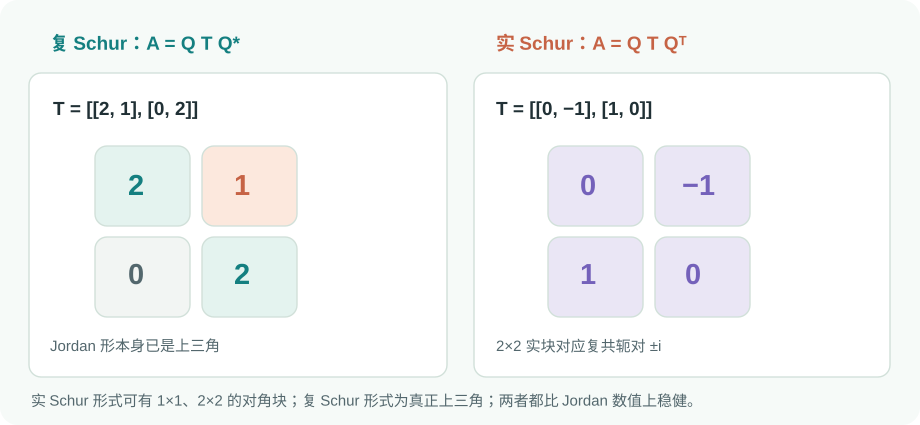
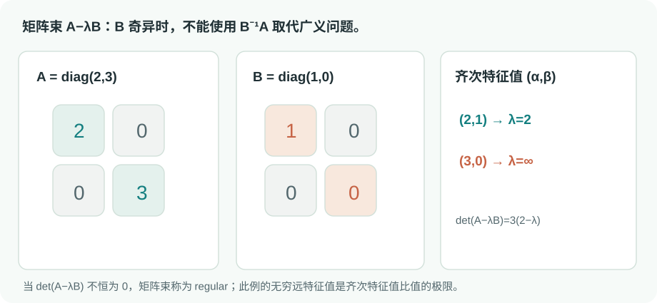

01 / 为什么无法对角化，也能做稳定的谱分解？
矩阵 J=[[2,1],[0,2]] 无法对角化，但它已经是上三角：特征值就在主对角线上。Schur 分解指出，任意复方阵都能通过酉相似变换得到上三角矩阵，不需要有完整的特征向量基。它保留了 Jordan 形的谱可见性，同时避免显式追逐对扰动不稳定的 Jordan 链。

对实矩阵可选实正交 Q 得到实 Schur 形式 A=QTQᵀ，此时 T 只是准上三角。复特征值成对出现在实 2×2 对角块的特征值中，而不是必须把所有特征值放成实对角元。
02 / Schur 形式如何连接特征值、正规性和 Jordan 形？
上三角 T 的特征多项式等于各对角项 tᵢᵢ 对应因子的乘积，所以复 Schur 中特征值直接可读。若 A 是正规矩阵 AA*=A*A，其 Schur 形式实际上可取对角形式（谱定理）；一般非正规矩阵允许 T 在对角线上方出现非零项。
Schur 向量是正交（酉）基，但一般不等于特征向量。第一个 Schur 向量可对应一个特征向量，其他列主要张成逐步扩大的不变子空间。对于 Jordan 块 J，可以直接选 Q=I、T=J，从而看见非正规耦合项。
03 / 真实数域中的复特征值怎样表示？
考虑 90° 旋转 R=[[0,−1],[1,0]]。它是实正交矩阵，却没有实特征向量；复特征值为 +i 和 −i。其自身就是一个实 2×2 Schur 对角块。采用实 Schur 形式时，不必为了表示复特征值将所有矩阵数据转成复数。
LAPACK 的 DGEES 可计算实矩阵的 Schur 形式与相应 Schur 向量，并返回特征值的实、虚部分。数值库的返回格式是工程约定，不能将它与 Jordan 块结构相混淆。
04 / B 奇异时，广义特征值为什么会在无穷远？
普通特征问题是 Av=λv；广义特征问题是 Av=λBv，其中 A、B 是同阶方阵。若 B 可逆，可转成 B⁻¹Av=λv，但直接构造 B⁻¹A 可能损害数值稳定性；若 B 奇异，则根本不能这样做。

把广义特征值写成齐次对 (α,β)，有限值取 λ=α/β，若 β=0 且 α≠0 则视为无穷远特征值。对于 singular pencil（det(A−λB)≡0）需要更一般的结构理论，不能沿用 regular pencil 的简单特征值计数方式。
05 / QZ 分解的两个酉（正交）变换做了什么？
广义 Schur（QZ）分解寻找两个正交（实数域）或酉（复数域）变换 Q、Z，使矩阵对同时达到三角/准三角结构：Q*AZ=S、Q*BZ=T。复杂情形必须保留“左侧与右侧换基可能不同”的事实，不能直接当作单个矩阵的普通相似变换。
在复数域 S、T 可取上三角；实数域里 S 为准上三角，T 为上三角（兼容实 2×2 特征块）。在这个结构上通过齐次对 α、β 读出有限或无穷远的广义特征值。LAPACK DGGES 直接面向这种矩阵对，而不是先求 B 的逆。
| 目标 | 输入 | 适合的分解 |
|---|---|---|
| 单矩阵全部特征值 | A 方阵 | Schur |
| 广义特征问题 | (A,B) 方阵对 | QZ / generalized Schur |
| 理论上的完整 Jordan 链 | 一个复方阵 | Jordan 理论（不作默认浮点算法） |
06 / 代码验证：旋转、矩阵束与无穷远值
from math import isclose
# 90° 旋转：λ²+1，两个复根 ±i
R=((0,-1),(1,0))
tr=R[0][0]+R[1][1]
det=R[0][0]*R[1][1]-R[0][1]*R[1][0]
assert tr==0 and det==1
# regular pencil A=diag(2,3), B=diag(1,0)
def pencil_det(lam):
return (2-lam)*3
assert pencil_det(2)==0
assert pencil_det(0)==6
alpha_beta=((2,1),(3,0))
assert alpha_beta[0][0]/alpha_beta[0][1]==2
assert alpha_beta[1][1]==0 and alpha_beta[1][0]!=0
print("Schur rotation and generalized eigenvalue cases verified")预期：Schur rotation and generalized eigenvalue cases verified。检查重点是特征多项式、regular pencil 的有限根与齐次无穷远值；完整 QZ 算法请使用成熟数值库。
参考资料与扩展阅读
文中的矩阵、示例值和图解是为了揭示机制而构造的低维算例；它们不替代定理证明，也不是数值库性能测试。